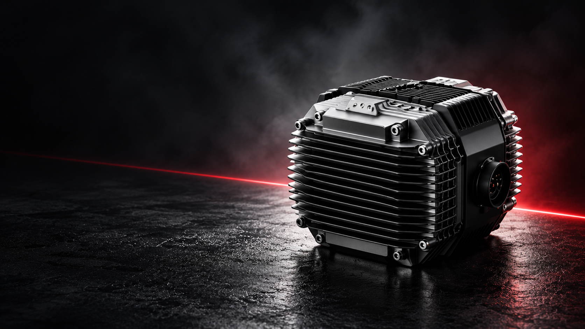
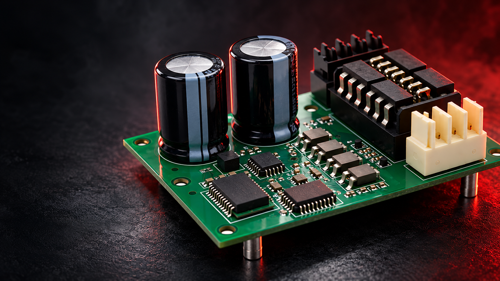
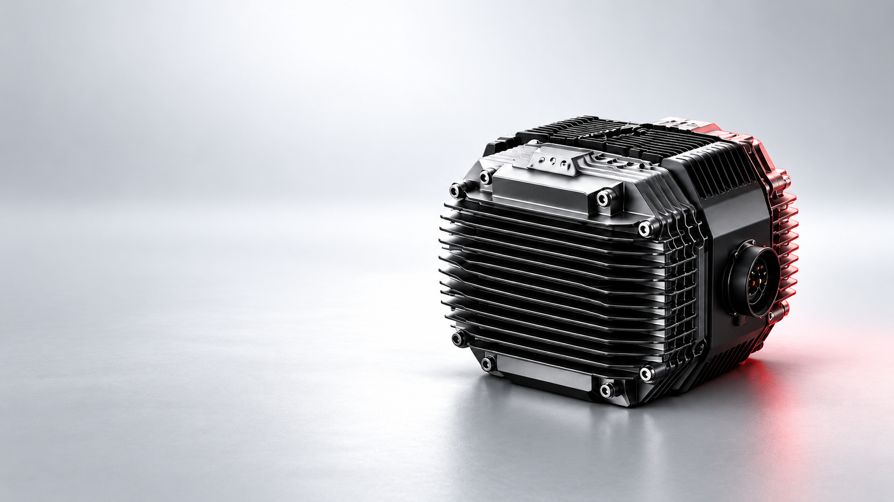

监测
采集电压、电流、温度、转速等关键参数，持续观察系统运行状态。
PXID CONTROLLER
PXID 控制器位于整车动力系统的核心，连接电池、油门、刹车、电机与仪表等关键部件，协调能量与信号流动，让车辆的输入、控制和输出形成清晰链路。
控制更智能 · 出行更美好提供直流电能
电能输入加速信号
信号输入制动信号
信号输入

输出三相电流，驱动动力
电能输出
输出运行数据与状态
数据通信连接终端与调试方向
数据通信系统连接为信息架构示意；实际端口、协议与功能以对应型号资料为准。
PXID | CONTROL SYSTEM
高集成的控制硬件设计，让每一次动力输出都更加稳定可靠。

板图与标注均为结构概念；具体器件位置以工程资料为准。
CONTROL EXPERIENCE
PXID 控制器根据不同工况，动态调整控制策略，让每一次动力输出都更平顺、更自然、更可控。
当前场景
通过精确的扭矩控制和响应策略，抑制突发冲击，让起步更平稳、自然。
场景文案为控制体验设计方向；实际策略与表现需结合车型和测试条件验证。
PXID PROTECTION
围绕运行状态的监测、异常判定、保护处理与恢复，建立更清楚的整车保护逻辑。

采集电压、电流、温度、转速等关键参数，持续观察系统运行状态。
依据对应型号的阈值与控制策略，识别异常类型及响应级别。
依据异常类型，执行限制输出或停机等保护动作，避免问题扩大。
当异常解除且满足条件时，按对应策略恢复运行，保持业务连续性。
触发阈值、动作及恢复条件需要根据具体型号与项目资料确认。
THERMAL DESIGN
通过合理的热源分布、结构设计与材料选择，构建被动散热路径，让控制器在复杂工况下保持稳定运行。
合理规划功率器件、驱动电路等主要热源的布局，通过导热界面与结构件紧密接触，形成从内部到外壳的传导路径。
通过大面积散热鳍片增加散热表面积；结合导热材料与外壳结构，改善热量向环境传递的条件。
考虑安装空间与气流路径，避免热量积聚，并结合整车布置核对通风与防护要求。
散热结构为设计示意；温升与持续输出能力以实际样机和测试报告为准。
PXID ECOSYSTEM
通过车端总线、调试工具与联网终端，与整车系统协同，构建清晰的信息链路。
OPEN INTERFACESCURRENT STATUS
依据车辆总线协议，核对整车系统对接要求。
需确认围绕控制参数与整车工况进行配置和验证。
需确认更新方式与支持范围以具体平台资料为准。
需确认根据车型与接口条件，评估配套方案。
需确认PERFORMANCE & RELIABILITY
从材料到测试，从设计到验证，关键表现需要在明确工况下核对。
当前页面不展示未经核验的性能数值或测试结论；正式资料可向项目团队索取。
SELECTION & INTRODUCTION
先定义整车，再确定控制器。从整车需求出发，系统化准备关键资料，确保选型准确、导入高效。
| 项目模块 | 需准备的资料 / 关键信息 | 影响的决策 | 参考示例 |
|---|---|---|---|
| 电池平台提供能量基础 | 电池类型、标称电压、电压范围、持续 / 峰值放电电流、BMS 通信协议 | 电压等级选型、电流与过流能力、欠压 / 过压保护策略、通信兼容性 | 例如：电池化学体系、目标电压、BMS 协议字段 |
| 电机资料确定驱动对象 | 电机类型、额定 / 峰值功率、额定 / 最高转速、电机参数 | 控制算法与驱动模式、电流与速度环参数范围、匹配的控制器型号、散热与功率冗余 | 例如：电机类型、功率、转速及极对数 |
| 整车工况定义应用边界 | 整车类型、整车重量 / 载重、最高车速 / 加速度、典型路况 | 控制策略与功能配置、功率与散热冗余、可靠性与防护等级、制动与能量回收策略 | 例如：载重、坡度、速度与连续运行时间 |
| 接口与空间匹配安装条件 | 高低压接口、通信接口、安装尺寸与布置空间、冷却方式 | 接口兼容与线束方案、控制器尺寸与安装方式、散热设计与环境适应性、整车布置维护便利性 | 例如：接口定义、安装空间与散热方式 |
参考示例为信息字段示意，不代表 PXID 产品规格或已确认的整车项目。
标准化导入流程，打通从需求到验证的关键环节。
收集整车需求，明确性能目标与应用场景。
确认电气、通信、安装与冷却等接口要求。
基于需求选择合适型号并进行样测。
进行控制参数匹配与整车功能调试。
完成样车实测，验证性能、可靠性与适应性。
PXID CONTROL FOR MORE VEHICLES
覆盖多种应用场景，提供清晰的选型参考，让控制器在合适的车辆与工况中发挥性能。
轻量化车体
关注平顺、能耗与静音
物流配送 / 工程作业
关注输出与稳定耐用
景区 / 园区 / 城市运营
关注连续运行与可靠性
TECHNICAL RESOURCES
提供完整的技术资料与支持，帮助您快速完成选型、对接与验证。
FAQ
整理用户最关心的问题，帮助您快速获取关键信息。
需根据车辆类型、动力平台与使用工况逐项核对。请提供整车资料，由项目团队评估适配边界。
建议先确认电池、电机、整车工况以及接口和安装空间，再进行样件匹配与样车验证。
对应型号的规格、接口与验证资料请联系项目团队索取；可提供的范围以正式文件为准。
可将需求与现有整车信息提交给项目团队，双方评估开发范围、周期与交付条件。